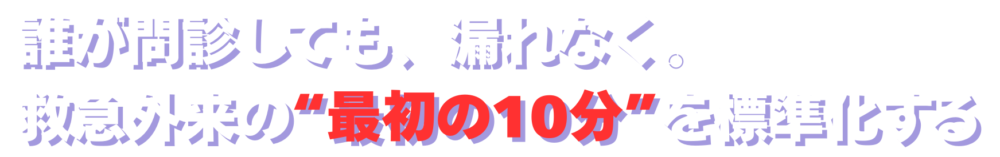
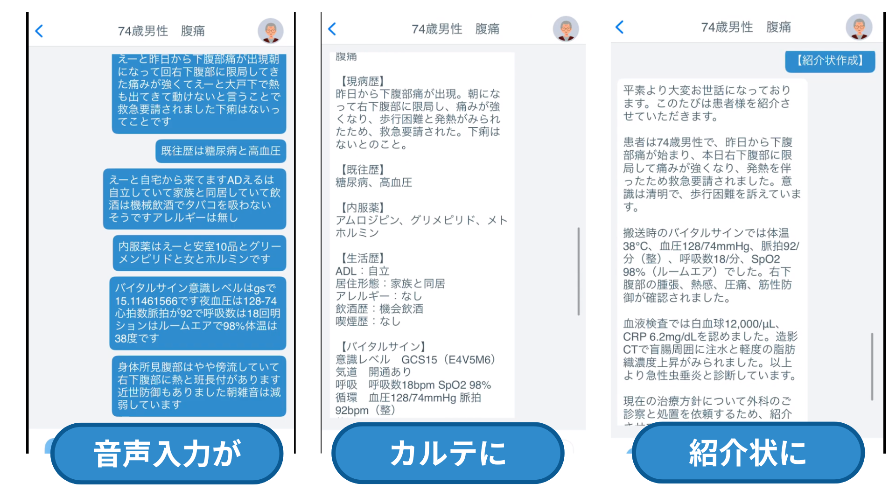
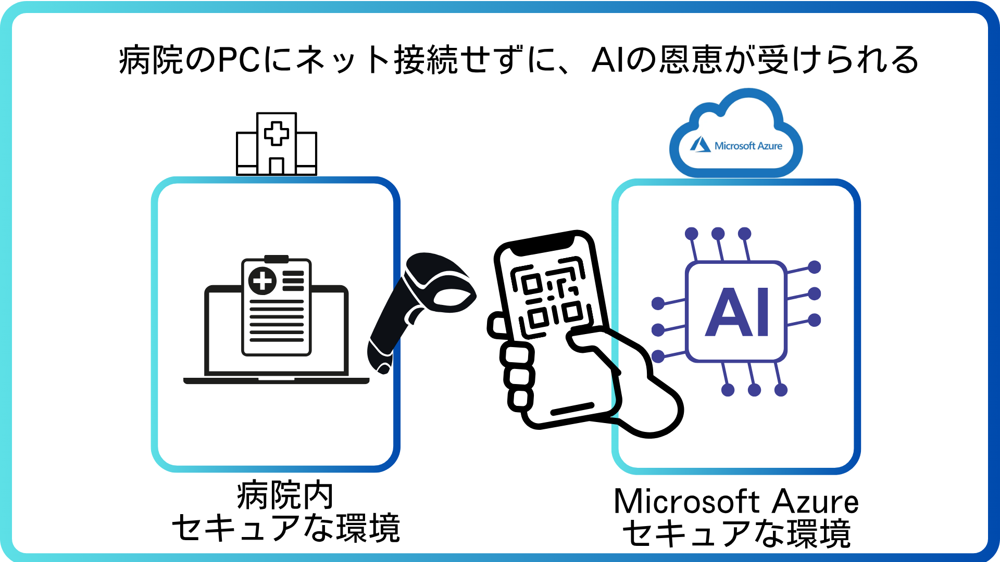
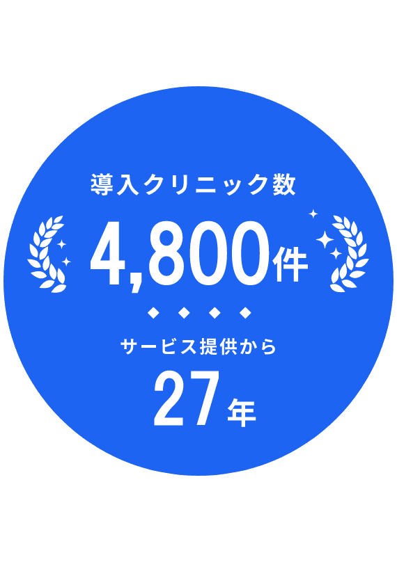
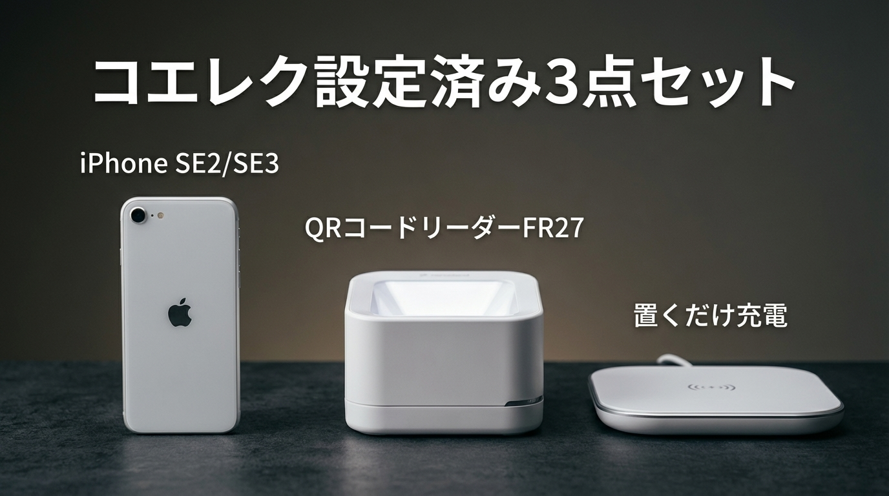
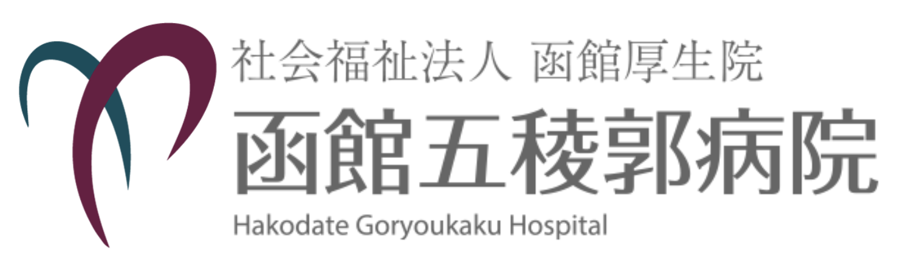
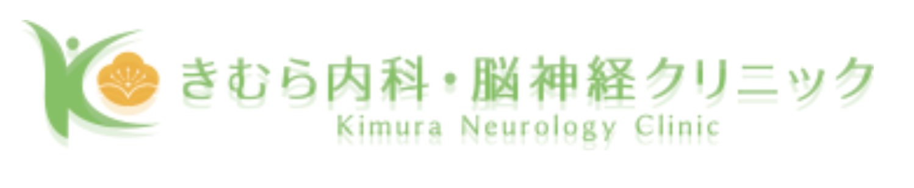
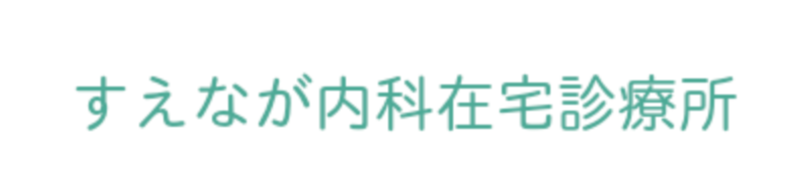

01
話すだけで、
定型カルテが完成
経験の差がカルテの質に出ない。
誰が入力しても、同じフォーマットで整理される。
研修医も、ベテランも、同じ品質のカルテを。

「最初から、完璧に整理されたカルテが手元にあれば…」
しかし実際には――
問診の質が「人」に依存し、
標準化できないまま運用が続く
診察後もカルテ記載が終わらず、
残業が常態化
不十分な記録では、
いざという時、スタッフも自分も守れない
これは人の問題ではない。
システムの問題です。
救急のクオリティは "最初の問診" で決まります。
人手不足の今こそ、問診の質を
人の経験 → システム
に移し替える必要があります。
現場が混乱しない。今日から使える。
写真準備中
経験の差がカルテの質に出ない。
誰が入力しても、同じフォーマットで整理される。
研修医も、ベテランも、同じ品質のカルテを。
写真準備中
マニュアルを読む時間すら不要。
スマホに向かって話すだけ。
「こんなに早く終わるのか」——その驚きが、続けたくなる理由に。

写真準備中
「あの時、何を聞いたっけ」がなくなる。
AIが会話を漏れなく構造化。
いざという時、記録がスタッフを守る。
タップして音声入力 → AI変換の例をご覧ください
音声で話すだけで構造化されたカルテが完成
変換例を見る →口頭説明がフォーマルな紹介状に自動変換
変換例を見る →説明内容と同意記録を漏れなく文書化
変換例を見る →
システム改修不要。どのメーカーでもそのまま使えます。

その他、多数の電子カルテに対応
お問い合わせから最短1ヶ月で、あなたの救急が変わります。
お問い合わせフォームから
ご気軽にご連絡ください
担当が最適プランを提案
電子カルテベンダーとの
調整不要で即導入
面倒な手続きなし。システム改修なし。今日から始められます。
導入病院の現場から届いた声をご紹介します。
札幌徳洲会病院
救急外来
「研修医でも迷わず使えて、救急外来での教育が格段にスムーズになりました。」
勤医協中央病院
救急科
「話すだけで記録できるので、患者さんとの対話を中断することがありません。」
函館五稜郭病院
救急外来
「救急要請が重なる時、タイピングでは間に合わない。コエレクなしでは、もう考えられない。」
クラークを雇うよりも安価にカルテ業務を削減！
初期費用
30,000円〜
月額費用
15,000円
（使用量制限なし）
※お支払いは年額一括払いとなります。
基本導入費用に加えて、必要な場合のみパッケージを追加できます。
一括パッケージ（必要な方へ）

※院内ですでにスマホ/QRリーダーをご用意できる場合、このパッケージは不要です。
はい、AIが自動で医療用語に変換します。
『STEMI』『トロポニン』『心筋梗塞』など、専門用語も正確に認識。
修正が必要なのは全体の10%以下。ほとんどの記録はそのまま使えます。
はい、電子カルテを選びません。
QRコード転送方式なので、どの電子カルテシステムでもそのまま使用可能です。
システム改修は一切不要です。
最短で即日導入可能です。
お問い合わせ → Webミーティング → アカウント発行（即日） → その日から使用開始
複雑な設定は一切ありません。
一度使えば、教育は不要です。
操作は『話す、選ぶ、かざす』の3つだけ。シンプルすぎて、忘れようがありません。
初回のみ簡単な使い方説明を行います。
はい、あなたのカルテができるプロンプトサポート付きです。
診療科や施設に合わせたオリジナルプロンプトを設定可能。
『あなたのカルテ』をコエレクが実現します。
月額15,000円（税別）の定額制です。
使用量による増減はありません。シンプルな料金体系で、予算管理も簡単です。
ご希望の方には無料トライアルをご用意しています。
まずはWebミーティングで概要をご説明し、ご希望に応じてトライアルをご案内します。
全国の先進的医療機関が選んだ、
最もシンプルな音声入力



救急医療の最前線で選ばれています